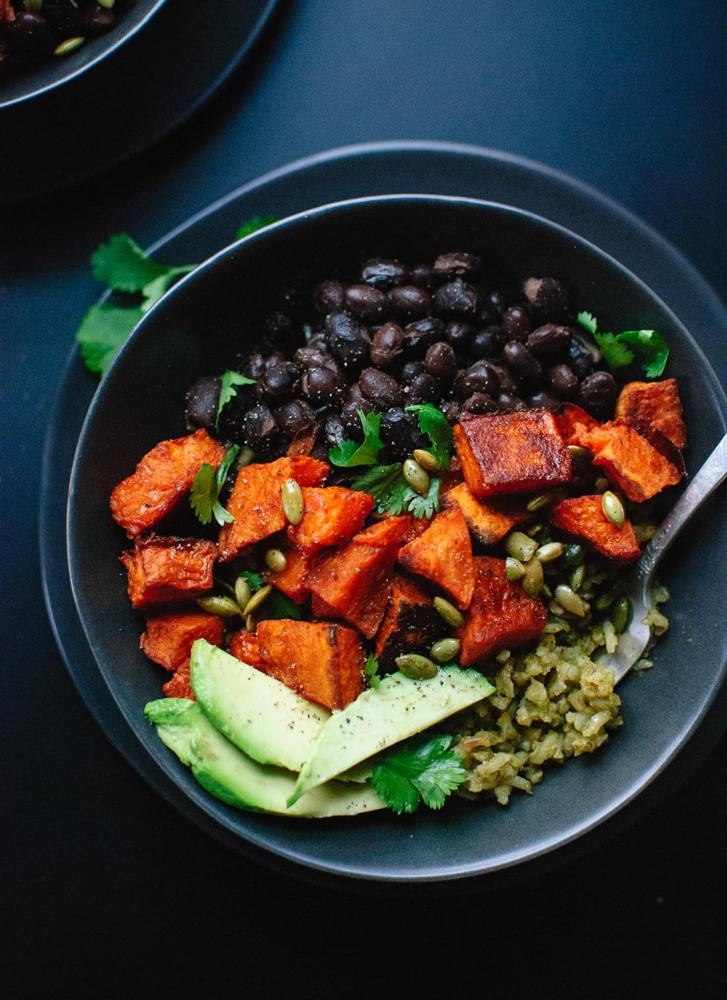

Green Rice recipe
From cookieandkate.com

Description
Cookie and Kate are finally back in the kitchen. I still wasn’t
feeling in the mood up until a couple of nights ago, when I spent
a few hours cleaning out the cabinets and the refrigerator. Turns
out, everyday cooking doesn’t need to involve avalanches of dried
pasta. Organization is key.
The past few weeks of kitchen avoidance have been heavy with
introspection. I want to say that I’ve come out on the other
side with clarity and a renewed zest for life. (Every sad story
needs a happy ending, right?) The truth is, I’m still just one
sappy coffee shop love song away from another fit of tearful
existential despair.
Ingredients
Green rice
- 3 tbsp extra-virgin olive oil
- 1 1/2 cups long grain brown rice
- 3 cups vegetable broth
- 1 1/2 cups baby spinach, lightly packed
- 1/2 cup coriander, lightly packed
- 1 green chili, seeded, membranes removed and roughly chopped
- 1 medium shallot, peeled and roughly chopped
- 1 clove garlic, pelled and roughly chopped
- 1/4 teaspoon salt, plus more to taste
Sweet potatoes
- 2 pounds sweet potato, peeled and sliced into 1-inch chunks
- 2 tbsp olive oil
- 1/2 tsp smoked paprika
- 1/4 teaspoon salt
Seasoned black beans
- 2 tins black beans
- 2 tsp ground cumin
- 1/2 tsp chili powder
- 1 tsp sherry vinegar or lime juice
- Salt and pepper to taste
Additional garnishes
- 1/4 cup pumpkin seeds
- 1/4 tsp olive oil
- 1 avocado, pitted and sliced
- Jarred mild salsa verde
- Chopped coriander
- Crumbled feta
Steps
-
Preheat oven to 425 degrees Fahrenheit. Line one large, rimmed
baking sheet and one smaller sheet with parchment paper. Place
the spinach, cilantro, jalapeño, shallot, garlic, salt and ½ cup
of the vegetable broth in a food processor or blender. Blend
until smooth.
-
Heat the oil in a heavy-bottomed pot over medium heat until
shimmering. Add the rice and stir to coat. Spread the rice in an
even layer on the bottom of the pot and let the rice lightly
brown. This happens quickly! When the rice starts to brown, stir
it and spread it out in an even layer again so that more of the
rice browns.
-
When most of the rice has lightly browned, scrape the green purée
into the rice. Stir until the rice is evenly coated with green
purée and continue to cook, stirring constantly, for a minute.
Add the rest of the vegetable broth to the pot. Bring to a boil,
then reduce the heat to a low simmer and cover the pot. Cook the
rice on a very low simmer until tender, 35 to 40 minutes.
-
While the rice cooks, toss the sweet potatoes in the olive oil,
smoked paprika and salt until the sweet potatoes are evenly
coated in oil. Arrange in a single layer on your prepared baking
sheet. Bake for 35 to 40 minutes, tossing halfway, until the
sweet potatoes are tender and caramelizing at the edges.
-
Meanwhile, transfer the beans and their cooking liquid (don’t
drain the beans) to a medium pot. Stir in the cumin and chili
powder and warm over medium heat. Once the beans are simmering,
cover the beans and reduce heat to maintain a very gentle simmer
until you’re ready to serve.
-
Once the rice is done cooking, remove the pot from heat. Uncover
the pot and place a clean tea towel over the pot, then recover.
The towel will help absorb excess liquid as the rice continues
to cook in its own steam. (If you don’t have a clean towel, you
can skip this step, just cover normally.) Let sit for 10 minutes.
-
Once the sweet potatoes are done cooking, toss the pepitas with
¼ teaspoon olive oil and a sprinkle of salt on the small baking
sheet. Toast the seeds in the oven for 4 to 5 minutes, until
they’re turning lightly golden and making little popping noises.
Set aside to cool.
-
Fluff the rice with a fork and season with salt if necessary.
Remove beans from heat, stir in the vinegar and season to taste
with salt and pepper.
-
Assemble your bowls: First add green rice, then use a slotted
spoon or fork to transfer beans to the bowls. Top with sweet
potatoes and add a few slices of avocado to each bowl. Sprinkle
with toasted pepitas and cilantro and optional feta. Serve with
salsa verde on the side.